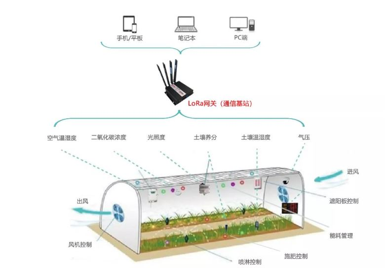

Intelligent Agricultural Internet of Things System

Project Overview:
The core of smart agriculture lies in smart management, which requires a complete architecture to support. Tuobao Technology's "DTU+LoRa gateway+IoT platform" is based on the LoRa technology suite, providing end-to-end LoRaWAN solutions that can quickly upgrade traditional industry applications to LoRa wireless Internet of Things applications, achieving "smart" management of the agricultural industry.
The LoRa terminal has extremely low power consumption, with a battery that can last for 3-5 years. Under the same conditions, it requires fewer gateways and does not require wiring, resulting in low construction costs. At the same time, it also supports a variety of application access. Its application in the agricultural industry can provide farmers with a low-power, highly reliable, large-scale deployment, and affordable industrial grade Internet of Things system, which saves water and effort, and brings maximum benefits to agricultural practitioners
Related Technologies:
DTU:
DTU is a wireless data transmission terminal based on LoRa technology, which utilizes LoRa networks to provide users with wireless data transmission capabilities. DTU uses an embedded real-time operating system as its software support platform and provides RS232 and RS485 interfaces, which can directly connect to serial devices and achieve transparent data transmission function; Low power design, capable of achieving digital input and output, analog input, pulse counting and other functions, can quickly help integrators and developers achieve sensing data collection in various occasions
IOT platform:
responsible for environmental management, security monitoring, environmental monitoring, and a series of environmental control contents
Project Functions:
1. Standardization and remote management of intelligent agriculture
2. Wide coverage, convenient and flexible usage, and convenient installation methods
3. Save time and effort, significantly reduce labor costs
4. Accurate data ensures the safety of crop growth environment and growth cycle to a higher extent
Project Implementation Steps:
1. Equipment analysis and design: Determine user needs, select appropriate agricultural intelligent technology platforms corresponding to soil types and areas.
2. Device deployment and connection: Configure smart agriculture based on LoRa IoT technology and connect it to Wi Fi networks and cloud service platforms.
3. Development and integration: Utilize communication technology between LoRa gateway and DTU to achieve interaction and control with intelligent agricultural platforms.
4. Testing and optimization: Test the functionality and stability of the system, and optimize user experience and system performance based on feedback.
5. Deployment and Support: Deploy the system to the user's home or office environment, providing continuous technical support and maintenance services.
Back